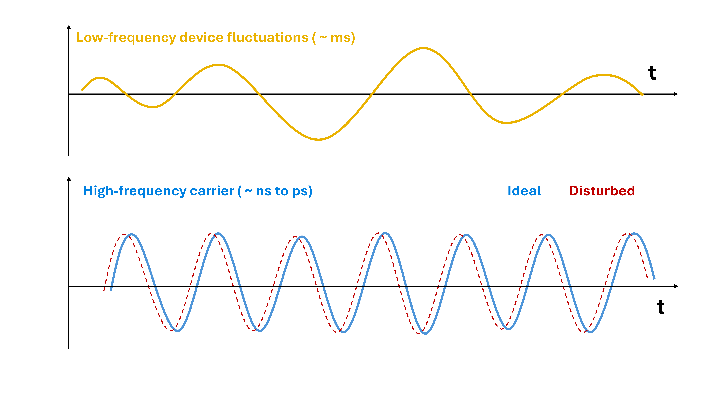
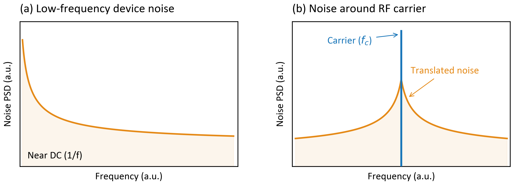
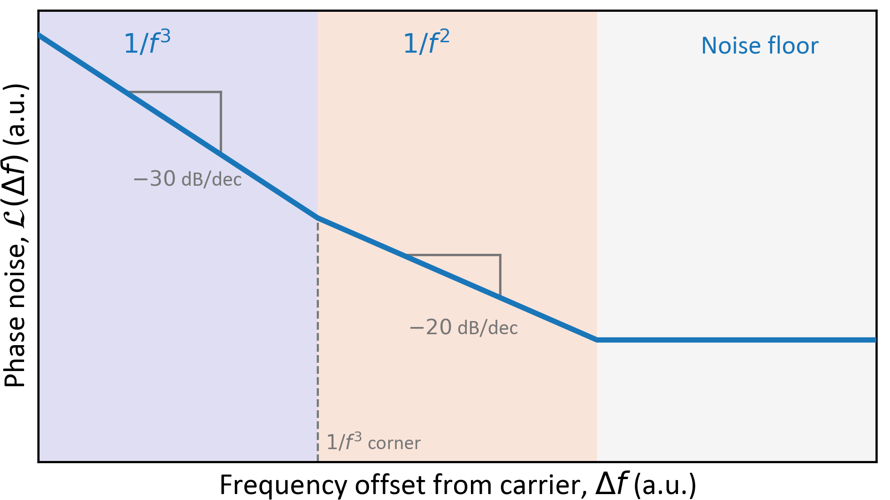
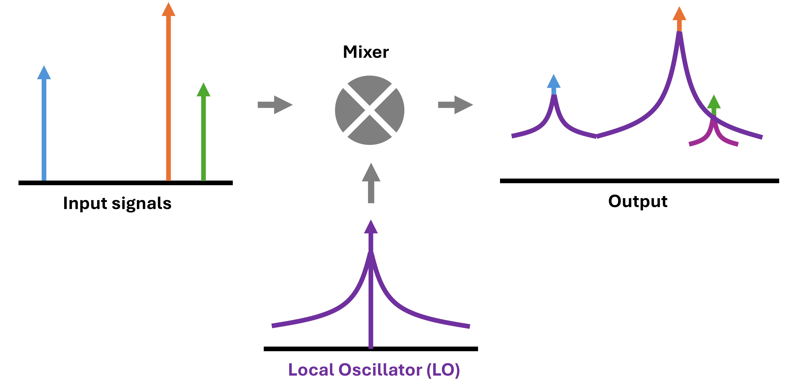

Low-Frequency Noise in High-Frequency Circuits
Low-frequency noise is often associated with slowly varying electrical fluctuations, seemingly far removed from the operating frequencies of modern analog and RF circuits. However, its influence is not necessarily confined to the low-frequency spectrum. Through nonlinear and time-varying circuit behavior, flicker noise can be translated to higher frequencies, affecting the performance of circuits operating in the megahertz and gigahertz regimes. In oscillators, it contributes to close-in phase noise, while in mixers and precision analog circuits, it can limit signal integrity and resolution. Understanding how these low-frequency fluctuations manifest at the circuit level is therefore essential for designing high-performance analog and RF systems.

The Principle of Noise Upconversion
In a linear, time-invariant circuit, noise components retain their original frequencies, although their amplitudes may change. However, many analog and RF circuits operate under nonlinear or periodically time-varying conditions, enabling noise to be transferred between different frequency regions. This phenomenon, commonly referred to as noise frequency conversion or upconversion, explains how low-frequency fluctuations can influence signals operating at much higher frequencies.
Consider a transistor operating within an RF circuit. Slow fluctuations in its electrical characteristics, such as drain current, transconductance, or effective capacitance, can interact with the high-frequency signal. Depending on the circuit architecture, these fluctuations may modulate the amplitude, phase, or instantaneous frequency of the carrier [1].
The frequency-domain interpretation of noise upconversion is illustrated in Figure 2. The characteristic $1/f$-like noise spectrum, with increasing power spectral density (PSD) toward lower frequencies near DC, can be translated to frequencies around a high-frequency carrier through nonlinear or time-varying circuit behavior. The resulting noise sidebands appear on either side of the carrier, potentially degrading its spectral purity.

A noise-perturbed carrier can be expressed as
where $A_0$ and $f_c$ denote the nominal carrier amplitude and frequency, respectively, while $a(t)$ and $\phi(t)$ represent noise-induced amplitude and phase fluctuations. Although these perturbations vary much more slowly than the carrier itself, they can generate spectral components in its immediate vicinity.
The extent and nature of noise conversion depend strongly on the circuit topology and operating conditions. In oscillators, low-frequency device noise can contribute to close-in phase noise, whereas in mixers, periodically varying circuit behavior can translate noise between RF and baseband frequencies [2]. Consequently, identical device-level noise characteristics may produce substantially different effects depending on the circuit in which the device operates.
Phase Noise in Oscillators
One of the most significant consequences of flicker noise in RF oscillators is its contribution to close-in phase noise, which affects the spectral purity of the oscillating signal. Phase noise is commonly characterized by the single-sideband phase noise $\mathcal{L}(\Delta f)$, expressed in dBc/Hz, where $\Delta f$ denotes the frequency offset from the carrier.
Flicker noise and white noise originating from active devices can perturb the instantaneous oscillation frequency, producing random phase fluctuations. Since phase represents the accumulated frequency deviation over time, their corresponding power spectral densities are related by
where $S_{\phi}$ and $S_{\delta f}$ denote the phase- and frequency-fluctuation power spectral densities, respectively. Thus, flicker-induced frequency fluctuations proportional to $1/\Delta f$ produce a $1/(\Delta f)^3$ phase-noise dependence, whereas white frequency noise produces a $1/(\Delta f)^2$ dependence.
These behaviors can also be described using the classical Leeson model, which relates oscillator phase noise to the underlying noise sources and resonator characteristics [3]. A simplified Leeson-type expression, including an empirical flicker-noise contribution, is
where $F$ is the effective noise factor, $k_B T$ the thermal-noise energy, and $P_{\mathrm{osc}}$ the oscillator signal power. The Leeson frequency $f_L=f_0/(2Q_L)$ depends on the oscillation frequency $f_0$ and loaded resonator quality factor $Q_L$, while $f_{\mathrm{flick}}$ represents an effective flicker-noise corner. The expression describes the approximate spectral behavior in linear units.
Figure 3 illustrates the characteristic phase-noise regions. At small frequency offsets, flicker-related frequency fluctuations produce a $1/(\Delta f)^3$ dependence ($-30$ dB/decade). Beyond the $1/f^3$ corner, white frequency noise typically produces a $1/(\Delta f)^2$ dependence ($-20$ dB/decade), followed by a far-offset noise floor. This simplified sequence assumes that the flicker-related corner lies below the Leeson frequency.

The oscillator's $1/f^3$ corner is not necessarily identical to the intrinsic transistor flicker-noise corner, since noise conversion also depends on resonator properties and circuit topology. The oscillator's sensitivity to noise varies throughout each oscillation cycle, making the waveform and transistor conduction intervals important. Recent study on current-biased Class-B CMOS oscillators have shown that charge sharing between the tail capacitance and resonant tank during transistor triode operation can significantly enhance flicker-noise upconversion [4]. Consequently, close-in phase noise depends not only on device-level flicker noise but also on oscillator architecture and operating conditions, highlighting the importance of accurate noise characterization for predicting RF oscillator performance.
Effect on Frequency Mixing
In RF mixers, local oscillators (LOs) are typically used to translate carrier signals between different frequency bands. As discussed previously, practical oscillators exhibit phase noise around their carrier frequency. During mixing, this phase noise is transferred to the converted signals, potentially affecting receiver performance.
This effect becomes particularly important when multiple signals of different amplitudes are present at the receiver input. Ideally, each carrier would be translated to a discrete frequency at the intermediate-frequency (IF) output. However, the LO phase noise introduces spectral spreading around each converted carrier. The magnitude of these noise contributions depends on the respective carrier powers and the LO phase-noise characteristics [5].
Figure 4 illustrates this behavior using three input carriers, with the strongest located between two weaker signals. After frequency conversion, all three carriers exhibit phase-noise sidebands originating from the LO. Since the central carrier is significantly stronger, its associated noise contribution is also greater and extends over a wider frequency range before reaching the receiver's intrinsic noise floor. The weaker carrier on the left remains distinguishable, whereas the carrier on the right is nearly masked by the phase-noise contribution of the stronger carrier.

This phenomenon, known as reciprocal mixing, increases the apparent receiver noise floor near strong carriers. Consequently, a receiver tuned to a weaker neighboring signal may experience a significantly reduced signal-to-noise ratio (SNR), even when its intrinsic noise figure remains unchanged. The severity of this degradation depends on the carrier power and the LO phase noise at the corresponding frequency separation. Thus, flicker-noise-induced phase noise can ultimately limit receiver sensitivity and selectivity.
Conclusion
Low-frequency noise can influence RF circuit performance far beyond the frequency range in which it originates. Through nonlinear and time-varying circuit behavior, flicker noise can affect signal stability, spectral purity, and overall system performance. Its impact depends not only on the intrinsic noise characteristics of semiconductor devices but also on circuit topology and operating conditions. Understanding these effects and accurately characterizing device-level noise are therefore essential for developing high-performance RF circuits and communication systems.
References
- A. Hajimiri and T. H. Lee, “A general theory of phase noise in electrical oscillators,” IEEE Journal of Solid-State Circuits, vol. 33, no. 2, pp. 179–194, Feb. 1998. doi: 10.1109/4.658619.
- H. Darabi and A. A. Abidi, “Noise in RF-CMOS mixers: A simple physical model,” IEEE Journal of Solid-State Circuits, vol. 35, no. 1, pp. 15–25, Jan. 2000. doi: 10.1109/4.818916.
- D. B. Leeson, “A simple model of feedback oscillator noise spectrum,” Proceedings of the IEEE, vol. 54, no. 2, pp. 329–330, Feb. 1966. doi: 10.1109/PROC.1966.4682.
- A. Bevilacqua and A. Mazzanti, “On the upconversion of the cross-coupled pair 1/f noise into phase noise in current-biased Class-B CMOS oscillators,” IEEE Transactions on Circuits and Systems I: Regular Papers, vol. 73, no. 3, pp. 1777–1786, Mar. 2026. doi: 10.1109/TCSI.2025.3602924.
- C. J. Grebenkemper, “Local oscillator phase noise and its effect on receiver performance,” The Communications Edge, vol. 8, no. 6, Nov./Dec. 1981, reprinted by WJ Communications, 2001.